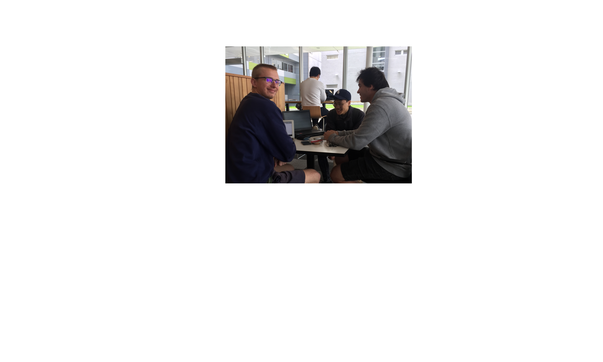

The usability of quick response (QR) codes. QR codes are a very common appearance but are they fit-for-purpose or well used? Does the use of QR code functionality make a mobile application more usable? Usability tests identify areas where people struggle with a product and help you make recommendations for improvements for the applications. The goal is to better understand how real users interact with QR code and to improve interaction between users and the QR code. Since “usability testing employs real users accomplishing real tasks, it can provide objective performance data” (TechSmith, 2017) and allow observations on the users to help improve and enhance the interaction between the users and how to use the QR code.
In order to gather the data required we will conduct a number of interviews/experiments regarding the QR codes. We have interviewed a number of people from a broad demographic in terms of age, gender and educational background. Each interview is a verbal
(audio recorded) 1-2 minute questionnaire of open-ended questions (audio files below).
In order to gather the data required we will conduct a number of interviews/experiments regarding the QR codes. Interviews are both qualitative and quantitative.
We have interviewed a number of people from a broad demographic in terms of age, gender and educational background. Each interview is a verbal (audio recorded) 1-2 minute questionnaire of open-ended questions (audio files below).
Using open-ended and reasonably context-free questions allow us to gather data from interviewees without any interference or influence such as unintentionally pushing interviewees towards an answer we want or interviewees seeing the interview as a 'test', changing their answers to score well.
This also allowed us to gather more information with an infinite set of possible answers. Open-ended questions are more suitable in relation to the usability of QR codes however, requires more effort to analyse the data. (Open Ended Questions Article We Researched).
In order for an interaction technique to be successfully adopted by a wide range of people, three conditions must be met:
The goal of the interview is to get an understanding of how different people would respond to a set of interview questions around QR Codes.
We planned with these questions to get a general understanding of whether our sample group knew about and how to use QR Code and in for what function they would use them for.
After conducting some interviews we thought it would be useful to get users to perform a simple task in two applications that use QR Codes.
So we asked users to find the QR function contained within Snapchat and Messenger to add new friends.
| Age | Gender | Education | Identifies QR Code | Visual Feelings | Able to use QR | Uses Mobile Applications | Favourite Apps | Used QR's in | Audio |
|---|---|---|---|---|---|---|---|---|---|
| 21 | Male | University | check | sentiment_satisfied | check | check | Snapchat | Snapchat, Random Places (Posters) | |
| 21 | Male | University | check | sentiment_neutral | check | check | Reddit, Messenger, Snapchat, Tinder | Cryptocurrency, Snapchat | |
| 17 | Female | Highschool | close | sentiment_neutral | check | check | Instagram, Facebook, Snapchat | Snapchat | |
| 26 | Male | University | check | sentiment_dissatisfied | check | check | Messenger, Pokemon Go, Hearthstone | Websites | |
| 20 | Female | Hair & Makeup | check | sentiment_dissatisfied | check | check | Instagram, Facebook, Snapchat | close | |
| 53 | Female | close | close | sentiment_neutral | check | close | close | close | |
| 23 | Male | Uni | check | sentiment_satisfied | check | check | Facebook, Snapchat, Instagram | Snapchat | |
| 59 | Female | close | close | sentiment_dissatisfied | close | close | close | close | |
| 22 | Male | University | check | sentiment_satisfied | check | check | Facebook, Messenger, Instagram, Hearthstone | Snapchat | |
| 18000 | Male | University | check | sentiment_satisfied | check | check | close | WeChat, Snapchat | |
| 30 | Male | University | check | sentiment_satisfied | check | check | close | help_outline | |
| 25 | Male | University | check | sentiment_neutral | close | check | close | close | |
| 16 | Male | Highschool | check | sentiment_satisfied | check | check | help_outline | WeChat, Website, Facebook, Snapchat | |
| 24 | Male | University | check | sentiment_neutral | check | check | help_outline | Shops, GrabOne | |
| 21 | Male | University | check | help_outline | check | check | help_outline | Snapchat |
| Choose first | Snapchat Speed | Taps in Snapchat | Messenger Speed | Taps in Messenger |
|---|---|---|---|---|
| Snapchat | 6 | 2 | ||
| Snapchat | 2 | 10 | ||
| Snapchat | 2 | 5 |
I am a technical person who has been interning at Air New Zealand for the past year developing mobile and web applications as well as doing data science in this role. I only got into programming in the first year of my degree but i have taken to it like a moth to a flame. The degree here at AUT has been the best decision of my life. As i feel i have been exposed to many mentors that have allowed me to excel in statistics and picking up plenty of new technical skills. I find I am a lot more outgoing in comparison to some of my other friends I have from within tech and this I feel has made me have to step up as a leader in many of my group assignments. I have found that as the number of group assignments have gone up it has been very pressuring for me to keep all parties happy from all the group assignments, to work as well as to extra external clients. This has lead me to have very precise communication skills and I find I won't stand for people beating around the bush. Throughout my past years at AUT I have learned that one of the key areas I have needed to work on has been the ability to be empathetic as I feel I can often be intimidating to converse with. I think that I come across to others as having a very strong frame and principles, but i feel that while learning a lot the pressures from the degree as well as work have not allowed me to dedicate my time to excelling in either of these areas. I think that with the role I played in this team is that I was looked to for leadership but I found it difficult to lead well due to pressures from other priorities. However I think that when it came to crunch time I have been able to direct the team to produce some interesting research.
This assignment was a bit different to prior assignments I have done at AUT, similar in a way to the first assignment. I find it difficult to think in such a way that takes into consideration the end user. However over the past year through projects with clients, this paper and as well as being exposed to the User Experience department at work I have begun to understand the importance of knowing the way that users feel about and use a system. Through this assignment, I was exposed to my first experiences of usability studies with a goal of understanding the users of a particular technology, in this case, QR Codes. I found it very interesting in the lectures when the discussion was around how bad questions would anchor users and how to ask questions in a way such that you wouldn't prompt them to alter the way they are feeling about a product/technology. I tried to incorporate what I learned from the lectures about anchoring into my interviews with users so that my questions would be more open to trying to make the interviewee comfortable in sharing their true thoughts on a technology.
In regards to how our team performed I believe we have all been under vast amounts of pressure from our R & D Projects as well just the fact of this semester being all of our last set of papers in our degrees. I feel that this lead to us procrastinating getting started on this particular assignment in a preemptive manner, which made it difficult for us to come up with some better usability experiments. However, I feel that the topic we have researched is very interesting and I think QR Codes, especially within mobile apps need to be structured in the right way to make the applications experience benefit from including functionality involving QR Codes.
I found that in some of my interviews I would accidentally break frame to help the interviewee's with awkward situations but in doing so I would anchor their forthcoming responses. I have learned from this that having more open session interviews where you keep the questions very few and open will allow me to not have to fill gaps to which will anchor users. And will allow the users to discuss their thoughts in more depth and granularity. Where the experiments would be based on observing how users naturally use a technology rather than the interview format we conducted which I felt masked many of the intricacies around how users interacted with QR Codes. I will take this learning into my user testings at work next week where I hope to watch users play with some of my own software (an iOS app) to see how they will try to bend and break it. This openness in trying to understand how users will naturally use a system or software tool I believe will enable me to build more intuitive and usable systems.
Going forward, employing the practices and methods I have learned in this course will be vital to my success in my internship and my hopefully long career in technology. I know that user-led design and being user-centric are becoming very important within the industry and with helping to build better products. I feel that this assignment has been the first step into understanding the real ways of testing a technology's usability. I understand that I feel quite differently about usability in comparison to a regular user, in that I prefer my tools to be within a terminal with clear documentation, whereas a general user just wants to intuitively know how to use a new tool. But learning this has been a transformation I have been beginning to undertake thanks to the likes of this course, talented UX colleagues I am exposed to and the rise of user led design.
This assignment have enlightened me as this is my first assignment that will be actually conducting the experiment. This assignment has aimed to do a usability test on various age groups of people whether they use QR code in their daily life. It was interesting to see and interact with various age groups as their reactions on the experiment was varied from one person to another. When we first started the assignment, we discussed together about the topic, and the general direction of which we should take to achieve our best grade. I believe the goal of this assignment was to let us experience scientific experiment in an academic setting so that we can learn how to do them, and interact with the community – team members, participants and etc. Overall I believe I learned some of the basic and key concepts of usability and its testing methodology. The assignment will be delivered in a website to present our experiment. Fortunately all of my team members were able to create and develop and website and since they were a friendly bunch we were easily able to communicate and collaborate to create this assignment. In addition, we all had experience on Science fair type of experiment during our Intermediate so it was helpful to carry our experiment based on that experience. Overall this assignment will give us an experience to advance our career whether academically or business and will further our knowledge in applied human computer interaction and will overall benefit us.
Chinese Control and Decision Conference. (2008). Recognition of QR code with mobile phones. In Control and Decision Conference, 2008, CCDC 2008, Chinese: Date: 2-4 July 2008 (pp. 203, 204, 205, 206). Piscataway, NJ: IEEE.
Cheng, Y. and Budiu, R. (2017). Scan and Shake: A Lesson in Technology Adoption from China's WeChat. [online] NN/G Nielsen Norman Group. Available at: https://www.nngroup.com/articles/wechat-qr-shake/ [Accessed 19 Oct. 2017].
Usability Testing Basics: An Overview. (2017). [ebook] TechSmith, p.16. Available at: http://webservices.itcs.umich.edu/drupal/wwwsig/sites/webservices.itcs.umich.edu.drupal.wwwsig/files/Usability-Testing-Basics.pdf [Accessed 19 Oct. 2017].
| Name | ID And Email | Phone |
|---|---|---|
| Andre Cowie | jpd3201@aut.ac.nz | 021 236 7349 |
| Ben Smith | jmr3283@aut.ac.nz | 021 204 8881 |
| Ben Son | vkv2476@aut.ac.nz | 021 0284 7142 |